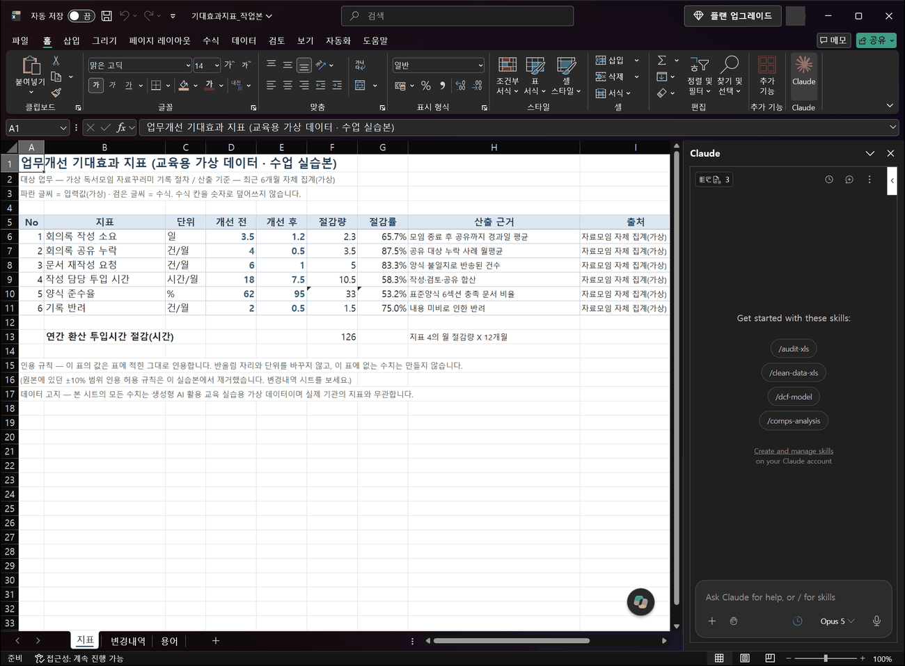
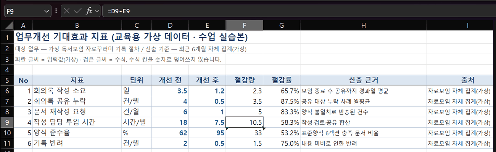
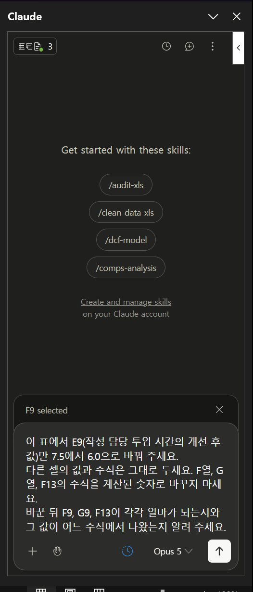
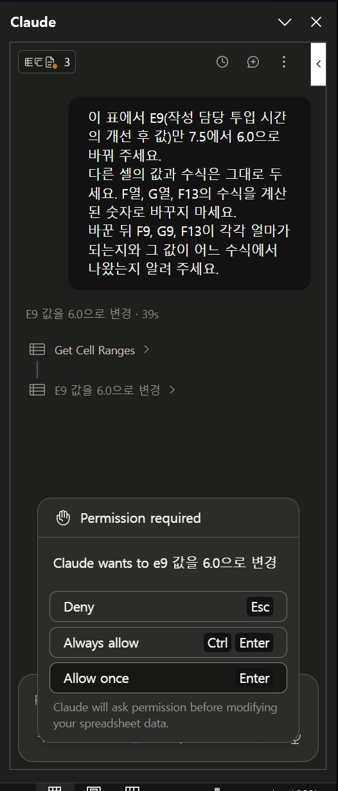
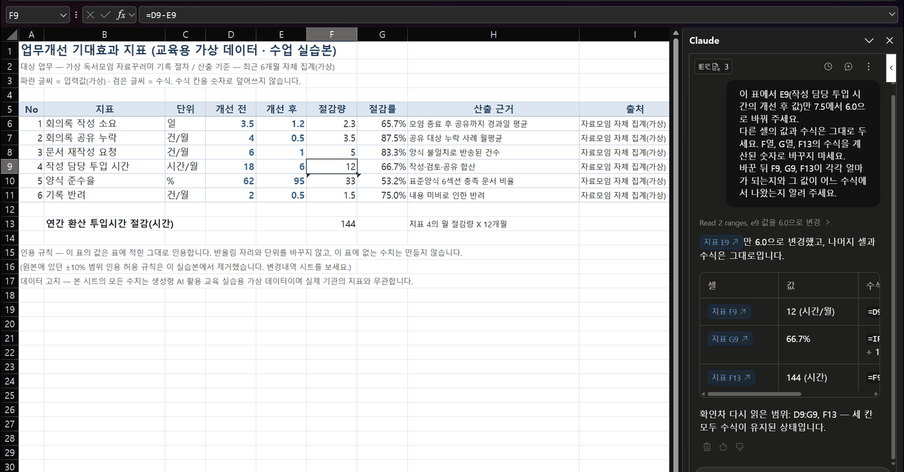
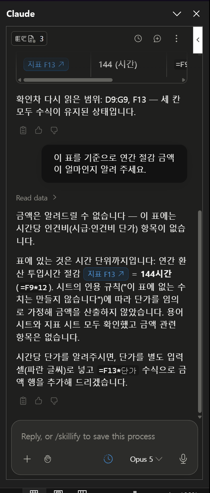

작성 담당 투입 시간
개선 전 18 시간/월 · 개선 후 7.5 시간/월
절감량 10.5 · 절감률 58.3%
연간 환산(13행) 126 시간
F9 = D9-E9 · G9 = IFERROR((D9-E9)/D9,"") · F13 = F9*12표에서 입력값과 수식을 구분하고, 값 한 칸만 바꿔 다른 칸이 제대로 따라오는지 확인합니다. 숫자를 문장으로 옮길 때 출처가 떨어져 나가지 않게 하는 연습까지 합니다.
표에서 값 하나를 바꾸면 여러 칸이 따라 움직입니다. 그 "따라 움직이는 구조"를 깨지 않고 값만 바꾸는 것이 이번 실습입니다.
아래는 같은 표의 같은 줄입니다. 개선 후 값만 7.5에서 6.0으로 바꿨습니다.
개선 전 18 시간/월 · 개선 후 7.5 시간/월
절감량 10.5 · 절감률 58.3%
연간 환산(13행) 126 시간
F9 = D9-E9 · G9 = IFERROR((D9-E9)/D9,"") · F13 = F9*12개선 전 18 시간/월 · 개선 후 6.0 시간/월
절감량 12.0 · 절감률 66.7%
연간 환산(13행) 144 시간
F9·G9·F13은 여전히 수식이어야 합니다. 숫자로 바뀌어 있으면 실패입니다위 값은 표의 수식으로 계산한 기준값입니다. 수업 준비 과정에서 직접 계산해 기준값표.csv에 넣어 두었습니다.
표에서 다섯 가지를 구분할 줄 알면 이 단원은 끝난 것입니다. 엑셀 함수를 외울 필요는 없습니다.
| 구분 | 무엇인가 | 이 표에서 | 바꿔도 되나 |
|---|---|---|---|
| 입력값 | 사람이 직접 적어 넣은 수치. 이 표에서는 파란 글씨 | D열(개선 전), E열(개선 후) | 이번 실습에서 바꾸는 대상입니다 |
| 수식 | 다른 칸을 보고 계산하라는 지시. 칸을 클릭하면 위쪽 수식 줄에 =로 시작하는 글이 보입니다 | F열, G열, F13 | 바꾸지 않습니다 |
| 수식 결과 | 수식이 계산해 낸, 화면에 보이는 숫자 | F9의 10.5 같은 숫자 | 직접 타이핑하면 수식이 사라집니다 |
| 서식 | 숫자를 어떻게 보여 줄지. 65.7%는 0.657에 백분율 서식이 걸린 것 | G열의 백분율 표시 | 보이는 모양만 바뀝니다. 값 자체와 다릅니다 |
| 근거 | 이 숫자가 어디서 왔는지 | H열(산출 근거), I열(출처) | 숫자를 인용할 때 같이 따라가야 합니다 |
=D9-E9처럼 =로 시작하면 수식입니다. 그냥 12라고만 보이면 누군가 계산 결과를 타이핑해 넣은 것입니다.| 상황 | 겉보기 | 실제 문제 |
|---|---|---|
| 수식 칸을 숫자로 덮음 | 값이 맞아 보입니다 | 다음에 입력값을 바꿔도 따라오지 않습니다. 표가 죽은 표가 됩니다 |
| 반올림해서 인용 | "약 58%" | 58.3%와 다릅니다. 이번 실습본의 인용 규칙 위반입니다 |
| 표에 없는 값을 계산해 제시 | "연간 1,512만원 절감" | 이 표에 금액 칸이 없습니다. 근거를 댈 수 없습니다 |
| 빈 칸을 0으로 채움 | 표가 깔끔해 보입니다 | "계산할 수 없음"과 "0"은 다른 뜻입니다 |
Claude for Excel 공식 문서(2026-09-15 확인)에는 값을 바꿀 때 수식 관계를 유지하고 셀 단위 근거를 클릭해 확인할 수 있다고 적혀 있습니다. 그리고 안전하게 쓰는 방법으로 아래 네 가지를 권합니다.
| 공식 문서의 권고 | 이번 실습에서 하는 일 |
|---|---|
| 작업을 확정하기 전에 항상 변경 내용을 검토하세요 | 04단계 3번 — 파일을 열어 네 칸을 직접 확인 |
| 넓게 편집시키기 전에 신뢰할 수 있는 사본에서 시작하세요 | 03단계 3번 — 작업 사본 만들기 |
| 무엇을 바꿀지 구체적으로 말하세요 | 04단계 2번 — "E9만 7.5에서 6.0으로" |
| 결과가 조직의 기준과 내 판단에 맞는지 확인하세요 | 05단계 — 인용 규칙과 출처 대조 |
공식 문서는 덮어쓰기 전에 경고가 표시된다는 점, 그리고 외부에서 받은 파일에 숨은 지시문이 들어 있을 수 있다는 점도 알려 줍니다. 이번 실습 파일은 우리가 만든 교육용 자료입니다. 공식 안내 ↗
아래쪽 시트 탭을 보세요. 지표 · 변경내역 · 용어 세 개입니다.
| 시트 | 무엇이 들어 있나 |
|---|---|
| 지표 | 이번에 다룰 표. 6개 지표와 연간 환산 한 줄 |
| 변경내역 | 이 파일이 원본과 어디가 다른지. 아래에서 설명합니다 |
| 용어 | 지표별 정의와 측정 방법. 숫자의 뜻을 확인할 때 봅니다 |
이 파일은 이전 교육에서 쓰던 표를 이번 수업 기준에 맞게 고친 파생판입니다. 원본 파일은 그대로 보존되어 있고, 바꾼 내용은 변경내역 시트에 적혀 있습니다.
| 항목 | 원본 | 이 실습본 | 왜 바꿨나 |
|---|---|---|---|
| 인용 규칙 | "위 값을 ±10% 범위 내에서 인용합니다" | "표에 적힌 그대로 인용합니다. 반올림 자리와 단위를 바꾸지 않습니다" | 이번 수업은 정확한 수치 보존을 확인하는 실습이라 ±10% 허용과 충돌합니다 |
| 대상 업무 표기 | 부서 회의록 작성 및 공유 절차 | 가상 독서모임 자료꾸러미 기록 절차 | 실제 기관 업무를 흉내 내지 않기 위해서입니다 |
| 수치와 수식 | 지표 6개 · F=D−E · G=IFERROR(...) · 연간=F9×12 | 그대로 | 수식 보존이 실습의 목적이므로 계산 구조는 건드리지 않았습니다 |
파일을 복사해서 기대효과지표_작업본.xlsx로 이름을 바꾸세요. 내려받은 파일은 손대지 않고 둡니다.
기대효과지표_실습본.xlsx(원본)와 기대효과지표_작업본.xlsx(작업용) 두 개가 있습니다.엑셀에서 "다른 이름으로 저장"을 해도 됩니다. 이 단원은 되돌릴 일이 자주 생기니 사본을 꼭 만들어 두세요.
기대효과지표_작업본.xlsx를 첨부하고 수정된 파일을 받아 내려받습니다.
"표를 개선해 주세요" 같은 요청은 하지 않습니다. 어느 칸을 바꾸고 어느 칸을 건드리지 말지를 먼저 말합니다.
요청을 보내기 전에 지금 상태를 알아 둡니다. 아래 칸을 하나씩 클릭하고 수식 입력줄을 보세요.
| 칸 | 지금 보이는 값 | 수식 입력줄에 있어야 하는 것 |
|---|---|---|
E9 | 7.5 | 7.5 — 입력값이라 수식이 없습니다 |
F9 | 10.5 | =D9-E9 |
G9 | 58.3% | =IFERROR((D9-E9)/D9,"") |
F13 | 126 | =F9*12 |
=로 시작합니다. 이 상태를 기억해 두고 작업 뒤에 다시 봅니다.
이 표에서 E9(작성 담당 투입 시간의 개선 후 값)만 7.5에서 6.0으로 바꿔 주세요. 다른 셀의 값과 수식은 그대로 두세요. F열, G열, F13의 수식을 계산된 숫자로 바꾸지 마세요. 바꾼 뒤 F9, G9, F13이 각각 얼마가 되는지와 그 값이 어느 수식에서 나왔는지 알려 주세요.


답변 내용을 믿고 넘어가지 않습니다. 파일을 열고 네 칸을 클릭해 보세요.
| 칸 | 보여야 할 값 | 수식 입력줄 | 이러면 실패 |
|---|---|---|---|
E9 | 6 또는 6.0 | 6 | 다른 값이면 엉뚱한 칸을 바꾼 것 |
F9 | 12 | =D9-E9 | 수식 없이 12만 있으면 수식이 덮인 것 |
G9 | 66.7% | =IFERROR((D9-E9)/D9,"") | 0.667이나 66.7이 직접 적혀 있으면 실패 |
F13 | 144 | =F9*12 | 126 그대로면 연결이 끊긴 것 |
=로 시작합니다.
바꾸라고 하지 않은 곳이 바뀌는 경우가 있습니다. 아래 다섯 줄을 확인하세요.
| 지표 | 개선 전 | 개선 후 | 절감량 | 절감률 |
|---|---|---|---|---|
| 1 회의록 작성 소요 | 3.5 | 1.2 | 2.3 | 65.7% |
| 2 회의록 공유 누락 | 4 | 0.5 | 3.5 | 87.5% |
| 3 문서 재작성 요청 | 6 | 1 | 5 | 83.3% |
| 5 양식 준수율 | 62 | 95 | 33 | 53.2% |
| 6 기록 반려 | 2 | 0.5 | 1.5 | 75.0% |
5번 양식 준수율은 올라가야 좋은 지표라 계산 방향이 반대입니다(개선 후 − 개선 전). 이 줄의 수식이 다른 줄과 똑같이 바뀌어 있으면 잘못 건드린 것입니다.
표에서 숫자를 꺼내 보고서 문장으로 옮기는 순간, 출처가 떨어져 나가고 반올림이 끼어듭니다. 그 지점을 연습합니다.
이 표의 값만 사용해 기대효과를 세 문장으로 정리해 주세요. 각 문장에 사용한 숫자마다 어느 셀에서 가져왔는지와 H열의 산출 근거, I열의 출처를 함께 적어 주세요. 표에 없는 수치는 만들지 마세요. 반올림하거나 단위를 바꾸지 마세요.
| 확인할 것 | 통과 | 실패 예 |
|---|---|---|
| 반올림 | 58.3% · 66.7%처럼 표의 자리 그대로 | "약 60%", "거의 3분의 2" |
| 단위 | 시간/월, 건/월, 일을 그대로 | "월 12시간"을 "연 144시간"이라 쓰고 셀은 F9라고 적는 경우 |
| 없는 값 | 표에 있는 칸만 인용 | 금액·인건비·투자 대비 효과 — 이 표에 없습니다 |
| 출처 | I열의 "자료모임 자체 집계(가상)"까지 함께 | 출처 없이 숫자만 |
이번엔 답이 나오면 안 되는 질문을 해 봅니다.
이 표를 기준으로 연간 절감 금액이 얼마인지 알려 주세요.

앞에서 본 변경내역 시트가 여기서 쓰입니다. 표는 그대로 두고 인용 규칙만 바꿔 결과를 비교합니다.
이 표의 지표 4(작성 담당 투입 시간)를 한 문장으로 인용해 주세요. 규칙: 표에 적힌 값을 그대로 씁니다. 반올림하거나 단위를 바꾸지 않습니다.
이번에는 다른 인용 규칙을 적용해 같은 지표 4를 한 문장으로 인용해 주세요. 규칙: 표의 값을 ±10% 범위 안에서 인용해도 됩니다. 방금 문장과 무엇이 달라졌는지도 알려 주세요.
| 보는 곳 | 규칙 A (이번 실습본) | 규칙 B (예전 ±10%) | 어느 쪽이 맞나 |
|---|---|---|---|
| 절감률 표기 | 66.7% | 약 60~70% 사이 아무 값 | 용도에 따라 다릅니다 |
| 검증 가능성 | 셀 값과 1:1로 맞춰 볼 수 있음 | 맞춰 볼 기준이 흐려짐 | A |
| 읽기 편함 | 숫자가 딱딱함 | 말하기 편함 | B |
| 오늘 수업 기준 | 통과 | 오답 | A — 이 실습본의 규칙입니다 |
지표 구성이 다른 표로 바꿔 봅니다. 이 표에는 절감률이 비어 있는 줄이 하나 있습니다.
"표지 재작업" 줄은 개선 전이 0, 개선 후도 0입니다. 절감률 칸(G8)이 비어 있습니다.
0으로 나눌 수 없어서 수식이 빈칸을 내놓은 것입니다. =IFERROR((D8-E8)/D8,"") — 오류가 나면 빈칸으로 두라는 뜻입니다.
첨부한 표의 값만 사용해 결과를 정리해 주세요. 절감률이 비어 있는 줄은 빈칸 그대로 두고, 왜 비어 있는지 설명해 주세요. 0%로 채우지 마세요. 앞선 대화에서 다룬 다른 표의 지표나 숫자는 사용하지 마세요.
| 나오면 안 되는 것 | 왜 |
|---|---|
| "회의록 작성 소요", "양식 준수율" | 앞 표의 지표입니다. 이 표에 없습니다 |
| 3.5일, 18시간, 62% | 앞 표의 값입니다 |
| 절감률 0.0% (표지 재작업 줄) | 빈칸을 0으로 바꾼 것입니다. 이번 실습의 핵심 실패 지점입니다 |
참여 만족 응답 비율은 올라가야 좋은 지표라 증가분으로 계산합니다(88−70=18, 18÷70=25.7%).
확인할 것 — Office 추가 기능이 설치·로그인되어 있는지, 회사 PC의 정책으로 막혀 있는지 확인합니다. 혼자 설치를 시도하지 마세요.
버전 때문일 수도 있습니다. 공식 문서에 따르면 이 추가 기능은 Excel 2016·2019 영구 라이선스판, iPad, Android에서는 동작하지 않습니다. 웹 Excel이나 Microsoft 365 구독 버전이 필요합니다. 수업 PC가 어느 쪽인지 확인해 기록해 두세요.
대신 진행할 방법 — 03단계의 B안으로 진행합니다. Claude 대화에 기대효과지표_작업본.xlsx를 첨부하고, 04단계의 요청 문장을 그대로 씁니다. 수정된 파일을 받아 내려받은 뒤 Excel에서 열어 셀을 확인하세요. 검증 방법은 완전히 같습니다.
기록 — 패널을 못 열었으면 그 사실을 적어 두세요. "기능이 없다"가 아니라 "이 환경에서 확인하지 못했다"입니다.
증상 — F9를 클릭했더니 수식 입력줄에 12만 있습니다.
복구 1 — Excel에서 Ctrl+Z로 되돌립니다.
복구 2 — 되돌릴 수 없으면 작업 사본을 버리고 기대효과지표_실습본.xlsx를 다시 복사합니다. 원본을 남겨 둔 이유가 이것입니다.
다시 할 때 — 요청 문장에 "F열, G열, F13의 수식을 계산된 숫자로 바꾸지 마세요"를 꼭 넣습니다. 이 문장이 빠지면 자주 덮어씁니다.
확인할 것 — 값 자체는 맞습니다. 백분율 서식이 풀린 것입니다. 65.7%와 0.657은 같은 값입니다.
복구 — 해당 칸을 선택하고 홈 → 백분율 서식(%)을 누르고, 소수 자리를 1자리로 맞춥니다.
구분할 것 — 이건 계산이 틀린 게 아니라 보이는 모양이 달라진 경우입니다. 값이 바뀐 것과 서식이 바뀐 것을 섞어 보고하지 마세요.
확인할 것 — 04단계 4번의 다섯 줄 표와 맞춰 봅니다. 어느 줄이 달라졌는지 먼저 찾습니다.
복구 — 사본을 다시 만들고, 이번에는 "E9 한 칸만"이라고 셀 주소를 분명히 적어 요청합니다. "투입 시간을 줄여 주세요" 같은 표현은 범위가 넓어 여러 칸을 건드리게 됩니다.
1. F9를 클릭했더니 수식 입력줄에 12라고만 보입니다. 무슨 뜻인가요?
2. 이 실습본의 인용 규칙에서 "절감률 58.3%"를 "약 60%"로 적으면 어떻게 되나요?
3. 새 표에서 "표지 재작업" 줄의 절감률 칸이 비어 있습니다. 어떻게 해야 하나요?